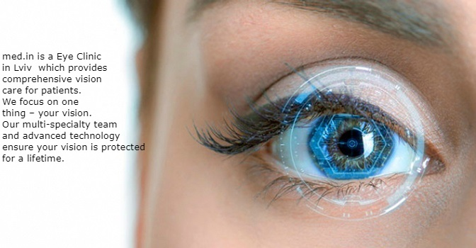

CLINIC
OUR SERVISES
 CONSULTATION
CONSULTATIONIn med.in are working only professionals. If you need more information about our doctors, CLIC HERE . If you want to check your vision, consult a professional, make an appointment CLIC HERE .
 LASER CORRECTION
LASER CORRECTIONLASIK is a surgical procedure that uses a laser to correct nearsightedness, farsightedness, and / or astigmatism. In LASIK, a thin flap in the cornea is created using either a microkeratome blade or a femtosecond laser. The surgeon folds back the flap, then removes some corneal tissue underneath using an excimer laser. If you need more informatio abot laser, we use CLIC HERE .
 SURGERY
SURGERYEyelid surgery, also known as blepharoplasty, can be performed for cosmetic or medical reasons. There are several medical reasons that reconstructive (ophthalmic) eyelid surgery may be considered. If the position of the eyelids interferes with your field of vision, it may be necessary to remove some tissue to regain a full visual field. Certain medical eye conditions or injuries may also necessitate a reconstructive procedure.
Cosmetic eyelid surgery removes the excess fat and wrinkled, drooping skin of the upper eyelids that can result in a tired or sad-looking face. A lower lid blepharoplasty tightens the lower eyelid skin and can also eliminate bags under the eyes. Cosmetic eyelid surgery can correct problems resulting from aging, as well as inherited traits that can effect some patients as early as their 20s or 30s. This procedure can be performed under local anesthetic for many patients.
If you need more informatio abot laser, we use CLIC HERE .WORKING HOURS
| DAY▼ | FROM▼ | TO▼ |
|---|---|---|
| MONDAY | 9:30 AM | 5:30 PM |
| TUESDAY | 9:30 AM | 5:30 PM |
| WEDNESDAY | 9:30 AM | 5:30 PM |
| THURSDAY | 9:30 AM | 5:30 PM |
| FRIDAY | 9:30 AM | 5:30 PM |
| SATURDAY | - | - |
| SUNDAY | - | - |